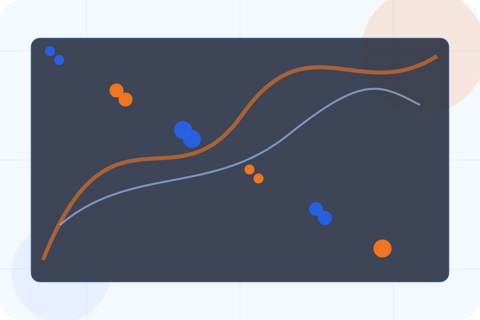
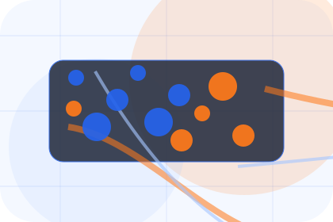
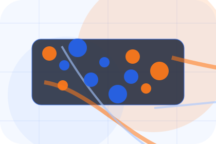
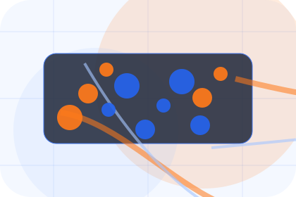
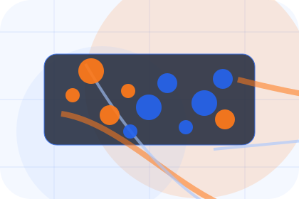
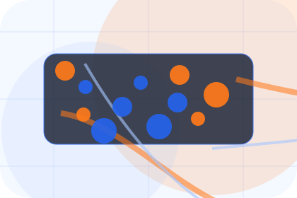
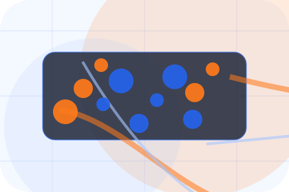
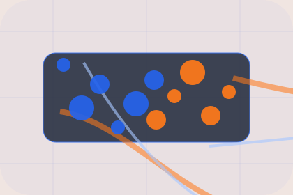

Best Fit
Who should use delays and when it belongs in the support journey.
Support / 01
Support opens as a clear logistics decision hub: what Chain offers, who it helps, why it matters, and which route to take first.
The first screen combines positioning, proof, primary action, and fast internal navigation, so people can act immediately or compare the rest of the support route with context.
Shipment dashboard hero
Select the closest route and Chain keeps the next step, proof, and follow-up expectation aligned with visibility and delivery control.

Support / 02
Claims explains the practical scope, best-fit situations, and expected outcome so logistics visitors can compare options without decoding jargon.
The section keeps the offer concrete: what is included, who it is best for, what decision it supports, and which linked route gives the deeper detail.
Explore SupportChain structures claims around best fit, what changes, and a clear next route so visitors can compare the block quickly before they request a quote.
Request QuoteSupport / 03
Delays explains the practical scope, best-fit situations, and expected outcome so logistics visitors can compare options without decoding jargon.
The section keeps the offer concrete: what is included, who it is best for, what decision it supports, and which linked route gives the deeper detail.
Explore Support

Who should use delays and when it belongs in the support journey.
Support / 04
Documents explains the practical scope, best-fit situations, and expected outcome so logistics visitors can compare options without decoding jargon.
The section keeps the offer concrete: what is included, who it is best for, what decision it supports, and which linked route gives the deeper detail.
Explore SupportWho should use documents and when it belongs in the support journey.

The practical benefit visitors should expect after choosing this route.

Where to compare details, pricing, support, or contact options before committing.
Support / 05
Pickup explains the practical scope, best-fit situations, and expected outcome so logistics visitors can compare options without decoding jargon.
The section keeps the offer concrete: what is included, who it is best for, what decision it supports, and which linked route gives the deeper detail.
Explore SupportWho should use pickup and when it belongs in the support journey.
The practical benefit visitors should expect after choosing this route.
Where to compare details, pricing, support, or contact options before committing.
Support / 06
Delivery explains the practical scope, best-fit situations, and expected outcome so logistics visitors can compare options without decoding jargon.
The section keeps the offer concrete: what is included, who it is best for, what decision it supports, and which linked route gives the deeper detail.
Explore SupportWho should use delivery and when it belongs in the support journey.
The practical benefit visitors should expect after choosing this route.
Where to compare details, pricing, support, or contact options before committing.
Support / 07
Escalation explains the practical scope, best-fit situations, and expected outcome so logistics visitors can compare options without decoding jargon.
The section keeps the offer concrete: what is included, who it is best for, what decision it supports, and which linked route gives the deeper detail.
Explore SupportWho should use escalation and when it belongs in the support journey.
The practical benefit visitors should expect after choosing this route.
Where to compare details, pricing, support, or contact options before committing.
Support / 08
Help explains the practical scope, best-fit situations, and expected outcome so logistics visitors can compare options without decoding jargon.
The section keeps the offer concrete: what is included, who it is best for, what decision it supports, and which linked route gives the deeper detail.
Open Contact

Who should use help and when it belongs in the support journey.
Support / 09
Contact explains the practical scope, best-fit situations, and expected outcome so logistics visitors can compare options without decoding jargon.
The section keeps the offer concrete: what is included, who it is best for, what decision it supports, and which linked route gives the deeper detail.
Explore SupportChain structures contact around best fit, what changes, and a clear next route so visitors can compare the block quickly before they request a quote.
Request QuoteShipment dashboard hero
Select the closest route and Chain keeps the next step, proof, and follow-up expectation aligned with visibility and delivery control.
Support / 10
Chain closes the support route with a clear action, a quick reminder of the value, and a low-friction way to request a quote.
Visitors who are ready can use the primary action. Visitors who are still comparing can scan the section links, proof, and support routes before they request a quote.
Request QuoteThe final block keeps the choice simple: act now, compare one more proof route, or send enough detail for a focused response.
Request Quotevisibility and delivery control
A freight-command site with shipment dashboards, network maps, quote modules, and status proof. Support ends with a direct path to request a quote, plus enough context for visitors who still need to compare.

Request QuoteInformation is provided for planning and should be reviewed for the final client, location, and operating rules.